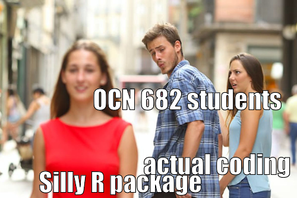

Quarto Part 2
UH Fall 2026
2026-09-22
code-foldWe can change lots of aspects of the figure right in our markdown document:
Some options:
out-width: "70%" (makes it 70% of the width)fig-width: 3 (make the width 3 inches)fig-height: 4 (make the width 4 inches)fig-align: "center" (center aligns the figure)We will walk through each of these together. See here for all options
We can add labels to figures and captions and subcaptions.
Some options:
label: some-fig-lab (allows you to call the figure in your quarto file and it automatically give it a number)fig-cap: "my caption" (gives your figure a caption)This will automatically save every figure in your output folder with the fig size based on your YAML and named with the label you gave it. NOTE Quarto automatically saves everything to the file location NOT the project location
| species | billmean |
|---|---|
| Adelie | 38.79139 |
| Chinstrap | 48.83382 |
| Gentoo | 47.50488 |
Note You can add a label to this code chunk too just like your figure and reference your table in the text by using tbl-name in your label.
| species | billmean |
|---|---|
| Adelie | 38.79139 |
| Chinstrap | 48.83382 |
| Gentoo | 47.50488 |
There are TONS of things you can do with tables. Check out the link here and also look at the gt and gtExtra packages. Look up the kableExtra package for everything you can do with it
One of Quarto’s biggest advantages for scientific writing: figures and tables are auto-numbered and linkable from your prose.
Step 1: Give your chunk a label starting with fig-
Same pattern for tables — label must start with tbl-
Then in your prose:
Renders as: “Mean bill lengths are summarised in Table 1.”
Prefix rules
fig- prefix — label: fig-my-plottbl- prefix — label: tbl-my-tableIn your Quarto document:
fig- label and a fig-cap:tbl- label and a tbl-cap:@fig-... and @tbl-...Most common mistake
Missing or wrong prefix — if the cross-reference isn’t rendering, check that the chunk label starts with exactly fig- or tbl-.
code-fold — show/hide code in your outputOne line of YAML lets readers toggle code on and off without changing echo::
When to use each approach
| Option | Best for |
|---|---|
echo: false |
Reports where readers never need to see code |
code-fold: true |
Reports where code is optional — reviewers, collaborators |
echo: true (default) |
Teaching materials, methods sections, reproducible workflows |
There are so many things you can do with themes. There are canned themes and there are also ways you can manipulate themes. Check out the link here for html theme options.
There are also many different formats. Here is a list of different documents. I really like GitHub documents because you can view them right in GitHub! PDF is also very useful.
Here is an example to make a “github flavored markdown” file. Remember to use YAML that is specific to the format you are using. So the gfm format info is here
Note you cannot use html interactive files in a gfm document. You will need to install the webshot2 package which automatically turns them into screenshots if you have an html table, for example, in your file.
Make a meme in R!

Slides created with Quarto
OCN 682 | Week 6 | Quarto Part 2